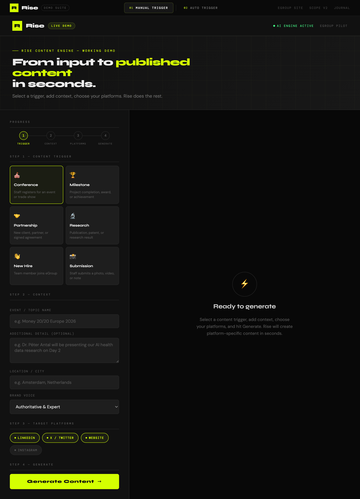
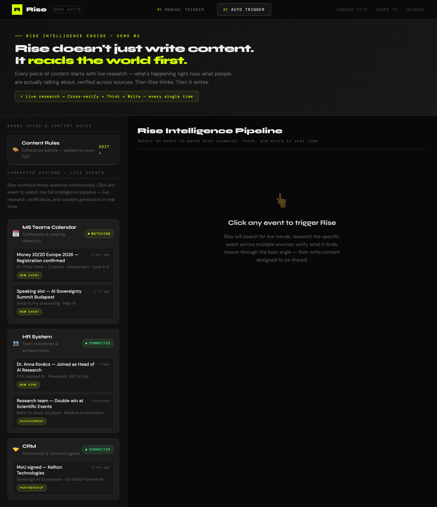
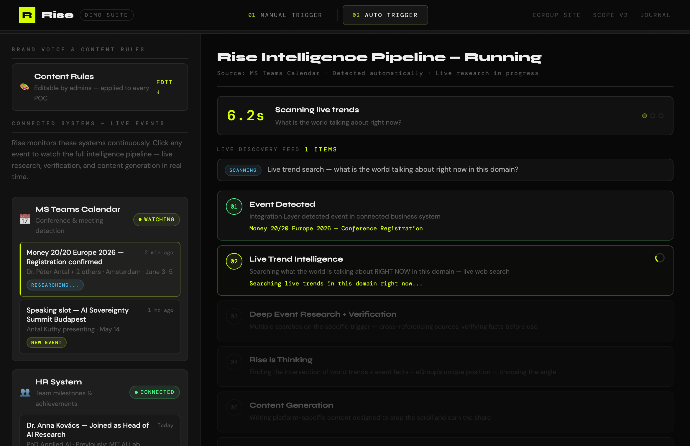

We asked the wrong question first
For the first sessions, Rise was built around a simple premise: something happens, a human submits it, AI generates content. That's a useful tool. It saves time. It removes friction. But it's not what makes content worth reading.
The question we should have started with — and the one that changed everything in this session — is:
"Why would a smart, busy person stop scrolling, read this, and then share it with their network?"
The answer is never "because a company announced something." The answer is always "because it told me something I didn't know, connected to something I already care about, and sharing it makes me look informed."
That realisation rewrote the entire Rise architecture. The platform doesn't write content about eGroup. It reads the world, finds where eGroup belongs in an existing conversation, and writes content that earns its place in someone's feed.
The press release problem
Early outputs from Rise looked like this: "eGroup CEO Antal Kuthy has been confirmed as a speaker at the AI Sovereignty Summit..." Professional. Accurate. Completely forgettable. Nobody shares content that reads like a filing cabinet.
The root cause was that the AI was generating content in a vacuum. It knew the trigger — someone registered for a conference — but it didn't know what was happening in FinTech this week, what the actual conversation at Money 20/20 was about, or what specific angle would make an industry insider stop and think "yes, exactly that."
Every Piece of Content (POC) must begin with live research — what the world is talking about right now in this domain, verified across multiple sources. No exceptions. The AI writes last, not first.
This added complexity. It added time — 30 to 60 seconds per trigger instead of 8 to 10. But it fundamentally changed the quality ceiling. Rise went from generating plausible content to generating content that has a reason to exist.
Two working demos. One complete pipeline.
This session produced two fully working demonstrations, running on real AI with live web research.
Both accessible at localhost:3000 via a local proxy that handles the API connection.

Demo 01 — Manual Trigger
The submission experience. A staff member selects a content trigger type — Conference, Milestone, Partnership, Research, New Hire, or Submission — adds a brief context, selects target platforms, and hits Generate. Rise produces platform-specific content for LinkedIn, X, Website, and Instagram in real time, displayed in pixel-accurate platform mockups.
The X mockup reflects the current X interface — dark background, correct icon set, verified badge, the full action bar with reply, repost, like, views, and bookmark. LinkedIn shows the full post UI with reactions and engagement bar. The website mockup shows an eGroup-branded news post preview with the actual site design.

Demo 02 — Auto Trigger Intelligence Engine
The flagship demo. This is Rise as it will work in production. Connected systems — MS Teams Calendar, HR, and CRM — show live events that Rise has detected automatically. No human submitted anything. The system watched existing business operations and identified content opportunities.
Clicking any event launches the full intelligence pipeline. This is what makes Demo 02 different from any other content tool demo you'll see.

Six steps. Zero human input.
The moments that changed the product
Rise V3 — fully documented
Everything built and decided in this session — and the full engineering specification required to build it — is captured in Rise Scope V3. Fourteen sections. The complete specification for the 50 engineers at eGroup who will build the production system.
V3 supersedes V1 and V2. The key additions: the Intelligence Engine specification, the Fact Verification Protocol, the Visual Layer, the mandatory Content Structure Standards, the full Learning Loop architecture, and the Engagement Architecture — why engagement is the only metric that matters and how every POC is built to earn it.
"Rise does not create content about your company. It reads the world, finds where your company belongs in the conversation, and writes content that earns engagement — every single time."
The call with Antal
The demos are ready. The scope is documented. The next significant moment is the detailed feedback call with Antal Kuthy — eGroup's CEO and co-founder. That conversation will determine:
Entry 04 will follow that call. Until then — the demos are live, the scope is locked at V3, and Rise has a clear answer to the question that matters: why would someone share this?